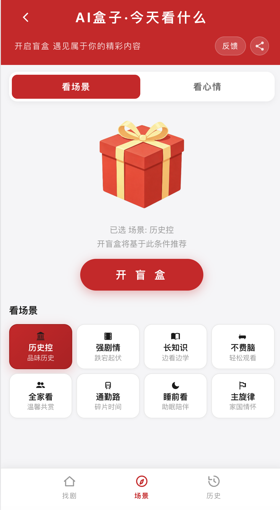
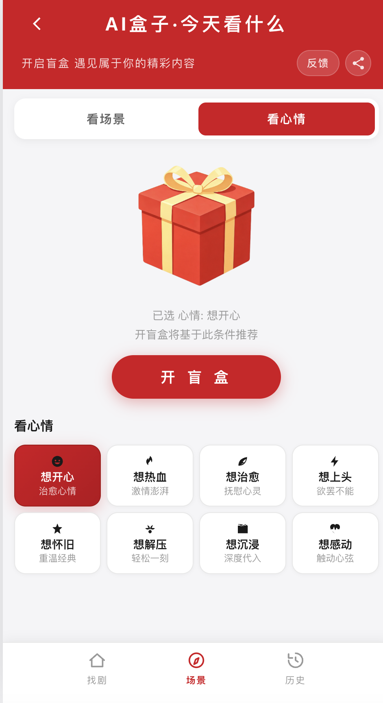
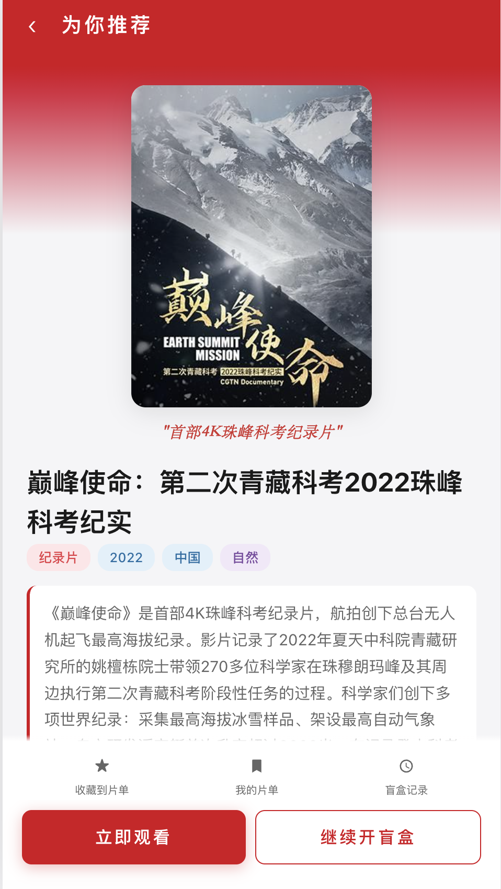
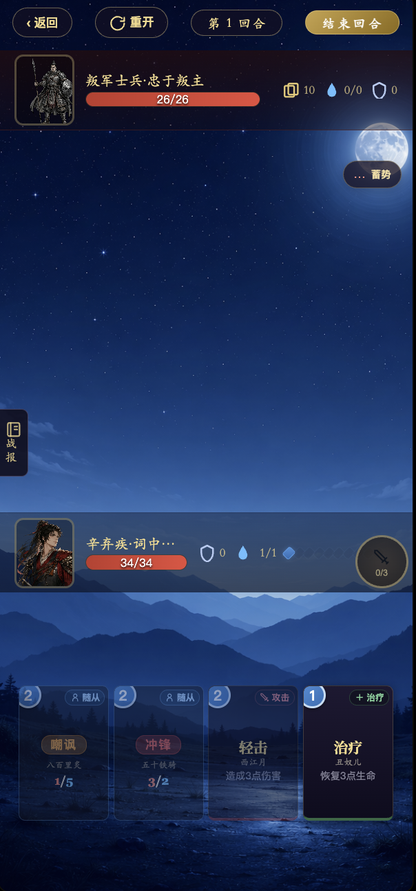
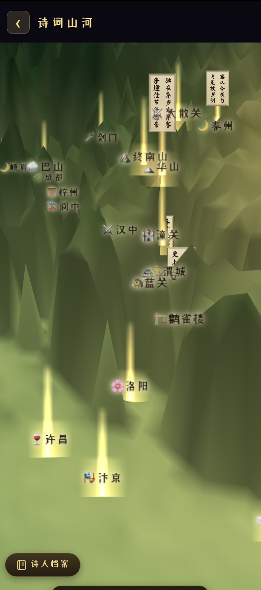
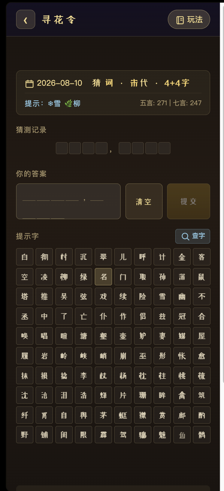

央视频 · 搜推全链路
核心命题：如何把「内容找人」从依赖人力的运营动作升级为可复评、可规模化的 AI-Native 工作流？三条产品线并行推进——搜索结果页供给效率、摇剧应用决策成本、诗魂对弈游戏化留存——覆盖从「用户搜什么」到「搜完看什么」到「看完留下」的完整链路。
摇剧 —— 用「开盲盒」切「看什么」决策成本

首页 · 盲盒仪式感

看场景 · 8 类场景

看心情 · 8 种心情

推荐结果 · 开盒即看
我的角色与贡献
央视频内容多但用户「不知道该看什么」。我 0→1 推进摇剧小应用上线：内容池设计确保每次摇出的结果都有消费闭环；露出算法按内容优先级 × 分类权重 × 加权去重保证质量。关键创新是用「小红盒开盲盒」仪式感完成冷启动，再把纯随机升级为结构化轻决策——「看场景」（历史控/强剧情/全家看/通勤路等 8 类）和「看心情」（想开心/想热血/想治愈等 8 种）。上线后登顶央视频小应用榜。
诗魂对弈 —— 把「背诗」转译为「用诗」

卡牌战斗 · 回合制

诗词山河 · 地理+羁绊

寻花令 · 每日猜词
我的角色与贡献
文化类产品天然面临「用完即走」困境。我围绕三个轴设计留存体系：核心玩法层——卡牌策略战斗（用诗句组合出招），让诗词变成可博弈的资源而非静态文本；收集驱动层——200+ 诗词收藏馆 + 成就系统，让「收集」成为回访动力；玩法矩阵层——外接诗人百科 / 寻花令（每日猜词）/ 诗塔 Roguelike，拓展不同偏好的留存路径。从「背诗」到「用诗」，让文化内容有重玩价值。
搜索合集聚合卡 —— 从「零散单点」到「可运营资产」
我的角色与贡献
站内搜索结果只有零散单点视频与专辑，用户搜「张国荣电影」只能看到散落条目。我设计了合集聚合卡，并引入完整的 AI-Native 工作流：意图解析（识别用户搜的是人物/题材/年代/奖项）→ AI 召回（自动匹配内容池）→ 合集组装（按主题+热度+时效排序生成卡片）→ 触发校验（评估质量门控）→ 效果回流（CTR/Satisfaction 数据回灌优化）。把原本「运营手搓合集→逐条审核→上线」的人力密集型流程升级为可审可改可发的机器生产资产。
产品设计细节
卡片视觉上采用主视频大图 + 副视频缩略图的布局，让用户一眼感知合集主题；左下角展示合集动态标签（如「春节特辑」「高分经典」），右下角展示「共 N 集」引导连续消费；卡片底部加入「一键连播」入口，减少每一步的操作摩擦。整个卡片既是「搜索结果的答案」，也是「内容分发的入口」。
项目闭环：覆盖「搜 → 看 → 留」全链路
搜索结果页解决「供给效率」、摇剧解决「决策成本」、诗魂对弈解决「长期留存」——三条产品线虽独立上线，但共同回答一个问题：如何用产品杠杆而非人力堆砌来驱动内容分发？